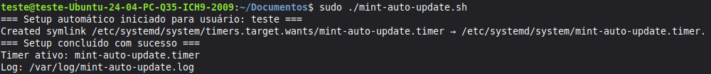

Atualização Automática - instalação de script
Para instalar automaticamente, execute o comando abaixo no terminal:
curl -fsSL https://jonathasjoab.github.io/mint_aut_update/mint-update.sh | sudo bash
Instruções
- Abra o terminal: Menu Principal > Administração > Terminal
- Cole o comando copiado (basta clicar com o botão direito do mouse, dentro do terminal e escolher a opção "Colar") e dê enter em seguida
- Digite sua senha quando solicitado e aperte enter, novamente
- Se tudo der certo, aparecerão estas informações no terminal, como no exemplo abaixo
(clique na imagem)
